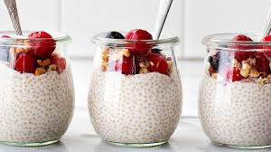

El chia pudín es un postre saludable y refrescante, lleno de fibra, antioxidantes y omega-3.
Se prepara rápidamente y es ideal para un desayuno o snack nutritivo.
Ingredientes:
¡Listo! Ahora puedes disfrutar de tu budín de banana saludable. Idealmente, puedes acompañarlo con un té o un café para un toque aún más delicioso.
